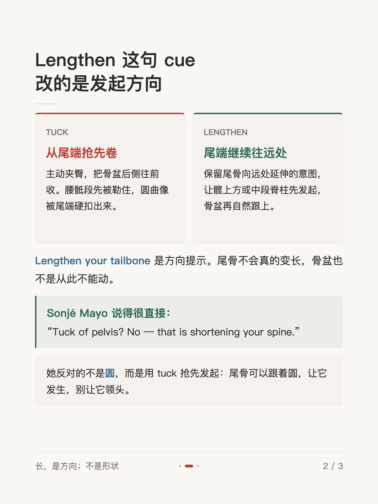
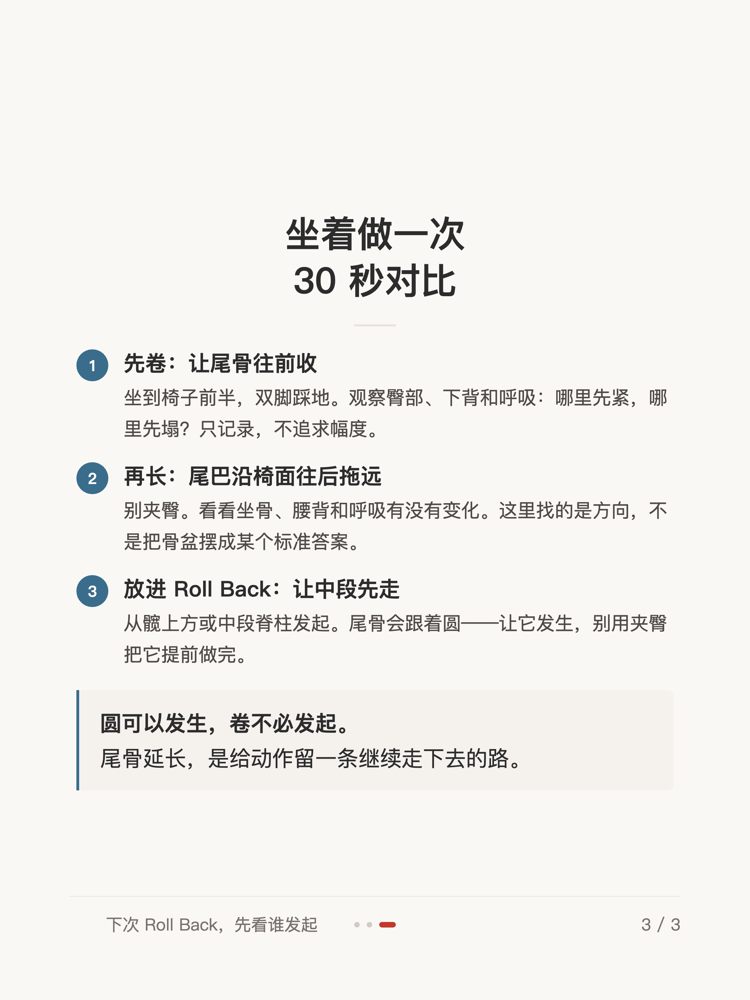

体感短文 #006
尾骨延长，在拉长什么

1 / 3

2 / 3

3 / 3
← 左右滑动浏览全部卡片 →
做 Roll Back 时臀越夹越紧、下背也跟着绷住——先别急着更用力，也许是动作从尾端抢跑了。Tuck 是主动夹臀、把骨盆后侧往前收，腰骶段先被勒住，圆曲像被尾端硬扣出来；Lengthen 改的是发起方向——保留尾骨向远处延伸的意图，让髋上方或中段脊柱先发起，骨盆再自然跟上。
Sonjé Mayo 说得很直接：「Tuck of pelvis? No — that is shortening your spine.」她反对的不是圆，而是用 tuck 抢先发起。尾骨可以跟着圆，让它发生，别让它领头——圆可以发生，卷不必发起。